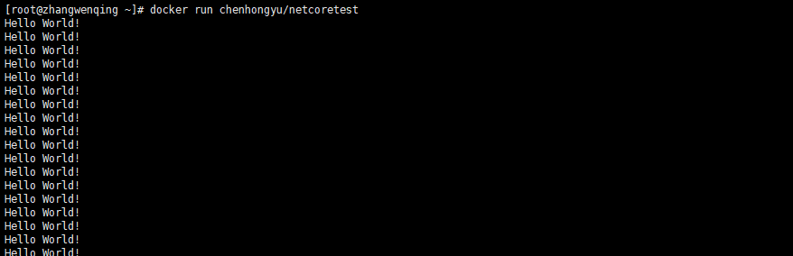

菜菜哥，我看了一下docker相关的内容，但是还是有点迷糊
还有哪不明白呢？
如果我想用docker实现所谓的云原生，我的项目该怎么发布呢？
这还是要详细介绍一下docker了
Docker 是一个开源的应用容器引擎，基于 Go 语言 并遵从 Apache2.0 协议开源。Docker 可以让开发者打包他们的应用以及依赖包到一个轻量级、可移植的容器中，然后发布到任何流行的 Linux 机器上，也可以实现虚拟化。
容器是完全使用沙箱机制，相互之间不会有任何接口（类似 iPhone 的 app）,更重要的是容器性能开销极低。Docker 从 17.03 版本之后分为 CE（Community Edition: 社区版） 和 EE（Enterprise Edition: 企业版），我们用社区版就可以了。
正如以上所说，Docker诞生的意义不仅仅实现了类似虚拟机的隔离性，最主要的是它可以把应用程序以及应用程序的运行环境整个打包在一起。注意：是整个环境哦，不仅仅是一些依赖库。这个划时代的进步，直接把docker镜像和宿主分离开来，使得docker镜像只要公布出来，就能使任何人在任何地方任何时间都可以随意运行，换句话说，docker镜像可以被分发到任何运行docker的服务器上。
说重点，架构呢？
看你心急的和猴一样....
Docker 架构
在docker的架构中，主要有三个主要概念：
镜像
Docker 镜像可以看作是一个特殊的文件系统，除了提供容器运行时所需的程序、库、资源、配置等文件外，还包含了一些为运行时准备的一些配置参数（如匿名卷、环境变量、用户等）。镜像不包含任何动态数据，其内容在构建之后也不会被改变。
docker镜像由多层组成，不同的镜像都能使用相同的父镜像作为他们的基础镜像，这些相同的基础镜像在docker的角度来看就是完全相同的层。在docker镜像的传输过程中，当某些相同的层已经存在的时候，就完全不需要重新传输了，这大大提高了镜像在网络上的传输效率。
分层的设计不仅使镜像分发更高效，也有利于减少镜像的存储空间。每一层仅仅被存储一次，就算基于相同基础层的镜像被创建两个容器的时候，这两个容器也是互相隔离的，虽然他们能读到相同的文件，但是却看不到对方文件的修改。一个容器被创建的时候，会创建一个新的可写层，容器中的修改会反应到这个新的可写层中。就算了容器修改了底层的文件，此文件的修改内容会copy到顶层，底层依然不会发生变化。
容器
镜像（Image）和容器（Container）的关系，就像是面向对象程序设计中的类和实例一样，镜像是静态的定义，容器是镜像运行时的实体。容器可以被创建、启动、停止、删除、暂停等。docker的容器通常是一个linux容器，它是运行在宿主机上的一个进程，但是和其他宿主进程是隔离的，并且所用的资源是受限的（只能访问特定的资源，比如网络接口，文件系统）
镜像仓库
镜像仓库和它的字面意思一致，是很多镜像的集合，它的作用就是把镜像共享给每个人，当然这里顺便提一下，镜像仓库也可以有私人仓库。当你的应用程序被打包之后，如果想在另外一个机器上运行，你就可以把你的应用镜像上传到镜像仓库，然后开放这个仓库，这样网络上的任何机器都能够下载你的镜像，然后运行。
通常，一个仓库会包含同一个软件不同版本的镜像，而标签就常用于对应该软件的各个版本 。我们可以通过<仓库名>:<标签>的格式来指定具体是这个软件哪个版本的镜像。如果不给出标签，将以 latest 作为默认标签.。
仓库又可以分为两种形式：
public(公有仓库)
private(私有仓库)
Docker Registry 公有仓库是开放给用户使用、允许用户管理镜像的 Registry 服务。一般这类公开服务允许用户免费上传、下载公开的镜像，并可能提供收费服务供用户管理私有镜像。
除了使用公开服务外，用户还可以在本地搭建私有 Docker Registry 。Docker 官方提供了 Docker Registry镜像，可以直接使用做为私有 Registry 服务。当用户创建了自己的镜像之后就可以使用 push 命令将它上传到公有或者私有仓库，这样下次在另外一台机器上使用这个镜像时候，只需要从仓库上 pull 下来就可以了。
构建分发运行镜像
开发人员首先构建一个镜像，然后把镜像推到镜像仓库中。因此，任何可以访问镜像仓库的人都可以使用该镜像。然后，他们可以将镜像拉取到任何运行着Docker的机器上并运行镜像。Docker会基于镜像创建一个独立的容器，并运行二进制可执行文件指定其作为镜像的一部分。
docker的缺陷
就像所有的技术解决方案，docker也不是完美的。docker的缺陷在于运行的内核，由于它直接运行在宿主机的内核之上，所以如果docker容器的运行内核版本和宿主机的内核不匹配就会出现问题。追根到底，还是硬件架构设计上的差异，不仅仅是docker容器，几乎所有的软件都会有内核架构不同而不能运行的问题。除此之外，由于docker是基于linux的容器技术，所以在windows下运行并不令人满意，虽然这些年docker在windows上也进步了很多。
来一个具体发布流程的例子呗？
可以呀，那我就以netcore为例吧
docker镜像发布
docker镜像的仓库有很多，这里以官方网站https://hub.docker.com/ 为例，首先你要在官网创建一个账号，然后可以在Account Settings=》Security中设置一个AccessToken ，这里为了演示，没有在官网显示创建仓库。因为我是本身是C#出身，这里利用vs2019来做演示。
打开vs2019新建一个netcore的项目，我这里创建一个控制台程序，程序很简单
static void Main(string[] args)
{
Console.WriteLine("Hello World!");
while (true)
{
Console.WriteLine("Hello World22222!");
System.Threading.Thread.Sleep(1000);
}
}然后在项目右键 添加=》docker支持，会根据当前项目自动生成dockerfile文件。就算没有ide的支持，也可以自己手撸一个dockerfile文件，然后利用docker的命令打包，当然语法和以下是一样的
FROM mcr.microsoft.com/dotnet/core/runtime:3.0-buster-slim AS base
WORKDIR /app
FROM mcr.microsoft.com/dotnet/core/sdk:3.0-buster AS build
WORKDIR /src
COPY ["netcoretest/netcoretest.csproj", "netcoretest/"]
RUN dotnet restore "netcoretest/netcoretest.csproj"
COPY . .
WORKDIR "/src/netcoretest"
RUN dotnet build "netcoretest.csproj" -c Release -o /app/build
FROM build AS publish
RUN dotnet publish "netcoretest.csproj" -c Release -o /app/publish
FROM base AS final
WORKDIR /app
COPY --from=publish /app/publish .
ENTRYPOINT ["dotnet", "netcoretest.dll"]
然后项目右键 发布=》容器注册表=》docker hub 创建发布选项，会弹出输入docker hub账号密码弹窗，然后输入账号密码，最后点击发布按钮，本地必须要安装docker哦，我这里为了演示，在windows上安装的docker for windows。和以上类似，就算没有ide的支持，我们一样可以利用docker命令把镜像推送到指定仓库。这里只是演示流程，所以不要纠结。
如果环境没有错误的话，发布过程中会弹出黑窗口
发布完成，在docker hub中刷新页面回发现新仓库已经被创建好了
接下来就是在装有docker的机器上，拉取进行并运行容器了，这里以我本地windows 和测试服务器linux为例，分别演示，但是其实在两个操作系统中命令是一模一样的
docker run chenhongyu/netcoretest
无论是在windows上还是在linux上，容器成功被拉取运行

虽然只是一个小小的测试程序，确把业务程序之外的最大云原生流程撸了一遍，希望对大家有帮助。大家可以拉取以下镜像是否可以运行呢？